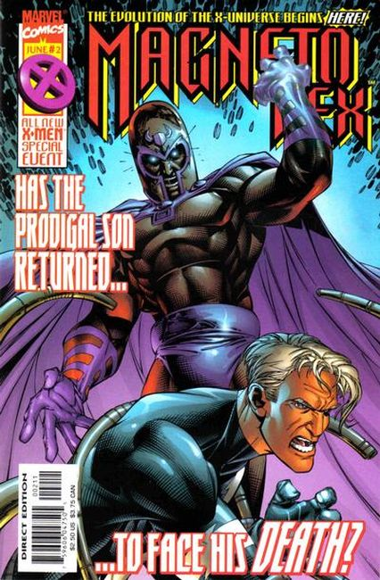
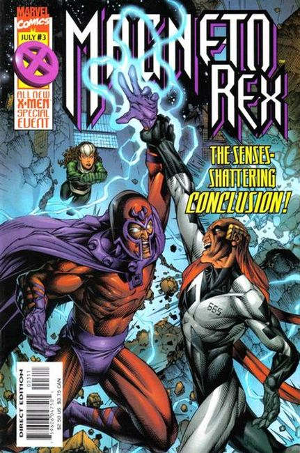

Magneto arrives in Genosha as its new monarch with a civil war between Magistrates and mutates in full swing. Quicksilver shows up in Genosha to confront his father but is captured by rebel mutates who want to keep their land from Maggie. Rogue joins the party as well.

Rogue and Amelia rescue Quicksilver from the mutates. Magneto prepares to take his new monarchy from all who oppose him.

Magneto quells the rebellion and begins to rule Genosha with Quicksilver and Voght at his side.